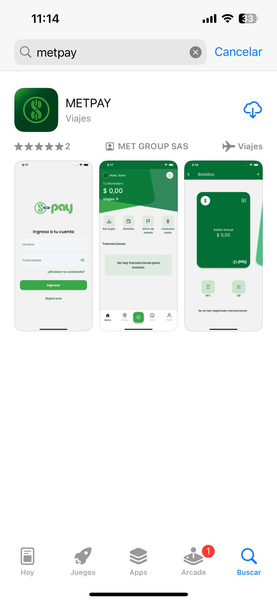

Manual operador de recaudo METPAY
Introducción
MET-PAY Sistema de recaudo para servicios de transporte
Plataforma web y movíl para usuario finales, que permite recargar, comprar viajes, pasar paquetes/transferencias o pagar con diferentes medios como tarjetas, App, QR y NFC, tus servicios o productos de transporte en general.
METPAY Mobile es un aplicativo disponible para Androud y iOS, listo para ser descargado en las tiendas oficiales.

Funcionalidades Principales
Gracias a los módulos principales que tiene METPAY Mobile, será posible gozar de las siguientes funcionalidades relevantes:
Recargar en línea
Transferir dinero entre usuarios PAY
Acceder a rutas en tiempor real
Pagos QA, NFC
Descargar App
Se debe buscar la app METPAY en la tienda de sus disposibito óvil y proceder a descargarla, Esta está disponible en Google Play y App Store.

Registrarse
Como usuario final o pasajero se debe realizar el registro o crear una cuenta METPAY
Al ejecutar la app METPAY se visualizará la siguiente interfaz, en donde el usuario tendrá dos diferentes opciones para realizar el registro de su cuenta.
Registro con Apple ID o cuenta Google
Se podrá crear el registro de una cuenta METPAY usando Apple ID en dispositivos Apple o usando una cuneta Google en dispositivos Android.
Se deberá ubicar y oprimir en el icono identificado con una manzana para dispositivos iOS o con el icono identificado con una letra G para dispositivos Android.
Registro diligenciando el formulario
Para realizar el registro de la aplicacioón METPAY diligenciando el formulario, se deberan seguir los siguientes pasos:
En la interfaz principal de inicio de sesión se deberá ubicar y oprimir sobre la opcion Registrarse tanto en dispositivos iOS como en dispositivos Android.
Se visuralizará el siguiente formulario, el cual deberá ser diligenciado de manera cuidadora ingresando datos reales y a los cuales tenga acceso el usuario que está realizando el registro, ya que se enviarpa un codigo de verificación ya sea al numero de celular o correo electrónico registrado, eso con el fin de validad y crear de manera exitosa la cuenta METPAY.
Al finalizar el diligenciamiento del formulario, oprimir en el botín de Confirmar.
Se deberá ingresar el codigo de verificación de cuatro (4) dígitos, que ha sido enviado al correo electrónico. En caso de no visualizar el correo electrónico con el codigo, verificar en la carpeta Spam o correo electrónico no deseado de la cuenta del correo electrónico.
En caso de no haber recibido el correo electrónico, ubicar y oprimir sobre sobre la opción Reenviar codigo para recibir un nuevo código de verificación
En caso de haber recibido el correo electronico con el código de verificación, este deberá ser ingresado y luego oprimir en el botón de Validar.